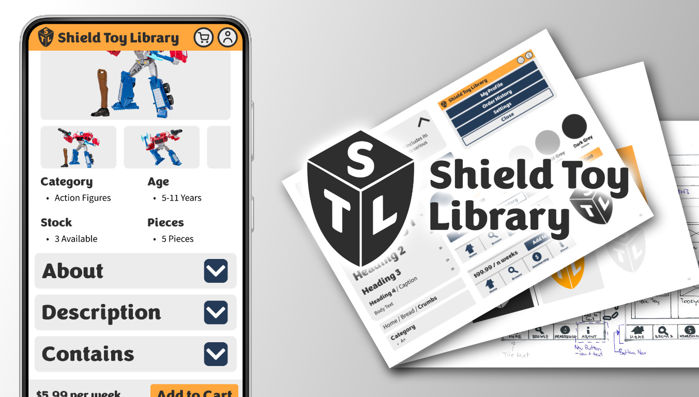
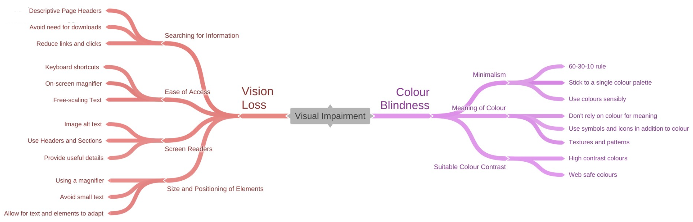
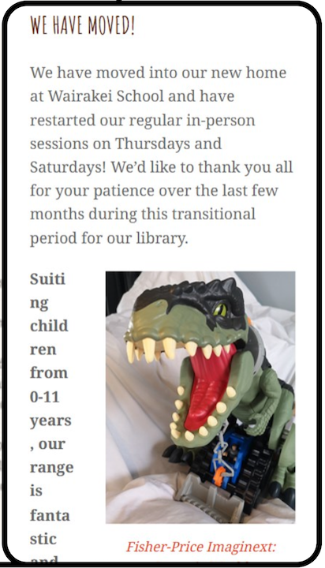
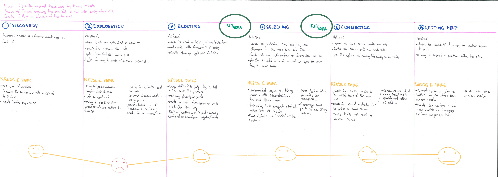
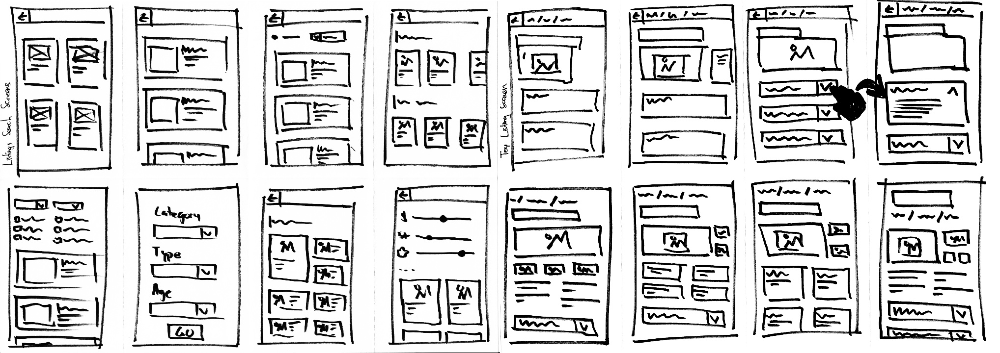
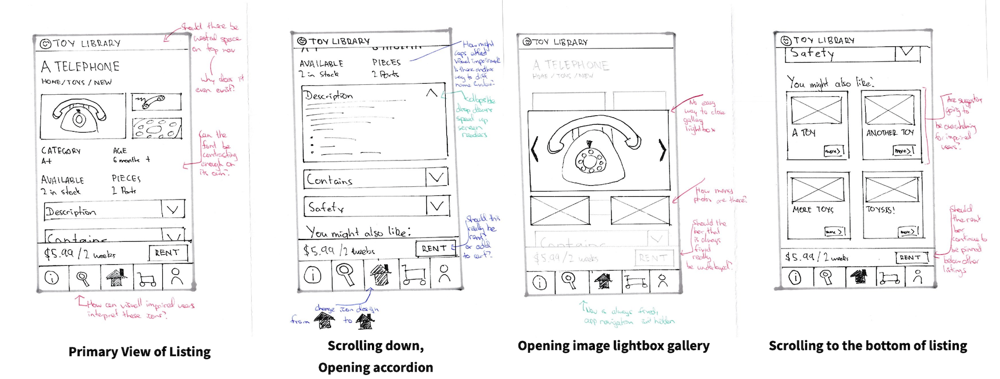
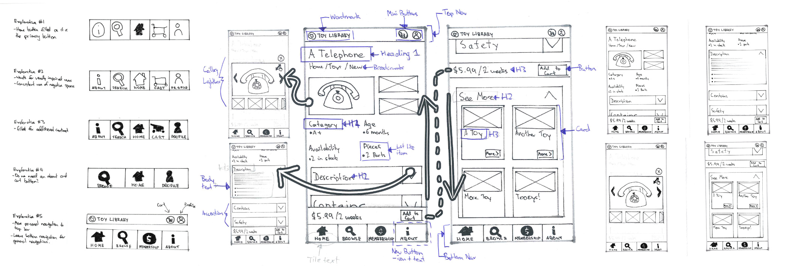
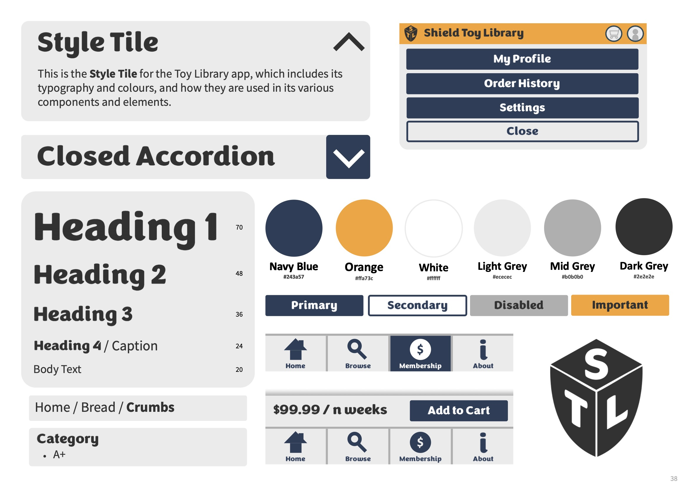
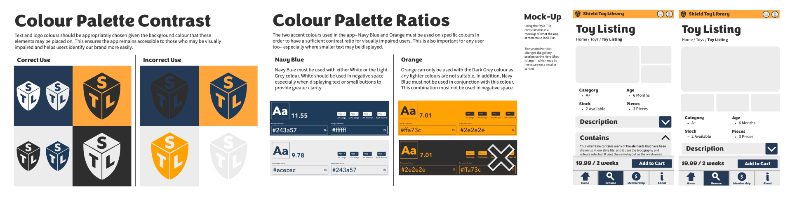

Toy Library Figma Demo
A small Figma project focused on creating an accessible brand identity applied to a small-scale Figma app focused on a specific user flow.

There are just about an infinite number of ways to create websites that look and feel different to anything else. What makes a website pleasing to look at though? Quick to navigate? Easy to read? Feel familiar? And how do design choices impact those with visual impairment and accessibility needs?
Visual impairment can affect people in a number ways, with there being various means to address each of them.

Exploring how to address visual impairment is one of the challenges of this project, and why a Toy Library is the subject- with many existing sites not addressing these concerns.
Before starting work on developing concepts and prototypes for a Toy Library app, existing websites and apps were analysed on the local market within New Zealand. Common issues were found between them:

A problem statement was developed to encapsulate the problems found in competitors' products and the value that should be delivered for users.
Using Toy Library websites is difficult for people who are visually impaired because they are tricky to navigate and are poorly organized.
They need a new app that offers them a better experience because existing sites are inaccessible which leaves this particular group of users frustrated, annoyed, overwhelmed and left out.
This new app should be simple, easy to use and highly accessible to those who struggle to see and should alleviate the frustration of impairment.
To ensure prototyping and development of the project remains focused on providing this value to users and to address accessibility needs, seven priciniples were written as something to refer back to when making decisions.
Due to the time and scope of the project, only a single core user-flow could be focused on for development rather than looking at an entire app workflow.
To select a suitable and most beneficial user flow that would make the most difference to our target users, a user journey map was developed to find pain points in the experience of a parent looking to find toys to rent for their child.

Two key areas were identified:
To brain-dump different ideas and concepts built around the two focus areas, a set of "Crazy 8s" were produced for each to rapidly come up with different ideas and ways of addressing user needs in these flows.

Wireframes were based off of the initial ideas, selecting different parts from different ideas that would be able to work effectively to address user needs in keeping with the seven principles.

These were then further revised given my own assessment of them and with feedback from others. In terms of addressing the principles, more contrast could be used across the screens and uppercase fonts could be remove for accessibility. There were also questions about using "Rent" or "Add to Cart" for the label on the rent button, and if it should be pinned when the user scrolls. Top Navigation was also identified as a "dead space", as it served no actual function.

In the revised wireframes, User Profile and Cart buttons were moved to top navigation, whilst the other app pages remained in the bottom. This change was made to distinguish between "user specific shortcuts" and "general app pages". Further alterations were made to address the other concerns.
Before turning the wireframes into a high-fidelity Figma Prototype, a brand identity was developed.
The identity was developed by starting at a lower-level of abstraction, using design elements like colour, typography and scale. Concerns of accessibility such as contrast and accessibility were considered at this point. Components were then produced at a higher-level of abstraction, focused on how the ideas in wireframes could be developed into usable touch-friendly elements on a small screen.


The final high-fidelity Figma prototype focused on the core user-flow of a user browsing through items, finding one, discovering information about it and choosing to add it to their cart. Many navigation elements and are non-functional and are there only to demonstrate what the wider app would be like.